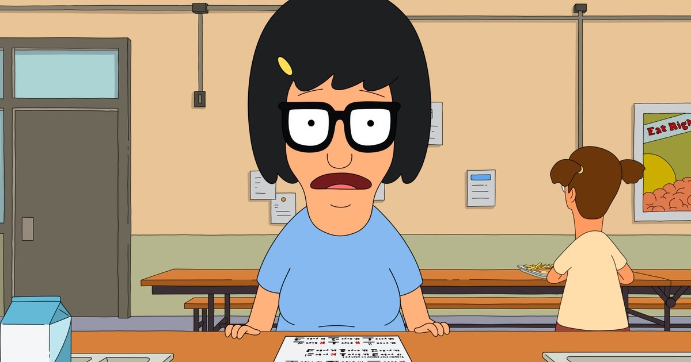

About Tina
She is the oldest daughter of Bob Belcher and Linda Belcher and the older sister of Gene Belcher and Louise Belcher. She is in eighth grade. She is a hopeless romantic yet easily influenced person with a powerful sex drive and minimal social skills. In Crawl Space, she likes horses, butts, zombies, boys and writing erotic fiction about movies and her life. She attends Wagstaff School with her siblings.
Tina Gasping
Tina's Characteristics
- Like butts
- Dances
- Dreams about horses
Tina's Family
Tina's family gets pretty wild, to learn more click the links.